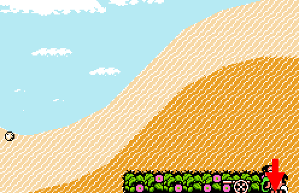

攻略
http://sollkanon.com/game/zidaigeki/
跟班
單人遊玩的話，跟班很礙手礙腳，所以每次打鬥，第一件事就是幹掉跟班。
我的習慣是，遊戲一開始，先把跟班的必殺技隱藏，以免打他時放屁。
わりふり也全都調整為 0%，免得跟班升級時防禦力和體力提升，變得比較難幹掉他。
頭目
頭目有主要和次要兩種，把全部主要頭目打完就可回文蔵一家破關，而次要頭目會不斷再生，可用來練等級。
只要衣服顏色是 淺青色 的，就是次要頭目。其他顏色則是主要頭目，打死一次就不再出現。
能力
在すてーたす可檢視角色的能力：
ぱんち（打擊） すばやさ（速度）
きっく（踢擊） ばね（彈跳）
ぶき（武器） ぼうぎょ（防禦；擋下攻擊的機率）
ぶきなげ（投武器） うたれつよさ（耐打；減少傷害）
きりょく（氣力；短血，耗盡則死亡。）
たいりょく（體力；長血，耗盡扣氣力，可隨道具恢復。）
前面八種能力的上限是 127，最後兩種是 255。
某項能力達上限時，記得在わりふり調整升級時能力提升比率。
我的流程
遊戲開始：將「ばね」和「ぼうぎょ」調為 0%，「きっく」和「ぶき」調為 20%。
左→左：（かわち）賭博賺 19000 文
左上：（かわち謎之店 L75）まほうのきもの【2000 文】
返→左下→左上：（えっちゅう謎之店 L39）ＵＰが２ばい【2000 文】
左下→左→右上：（いなば謎之店 L81）こうかが２ばい【5000 文】
左下：（ひぜん）せんぷうきゃく【1000 文】
左上：（ひぜん謎之店 L62）まっぷのかーそる【3000 文】、すくりゅう II【1200 文】
地圖：（りくちゅう謎之店 L17）すけすけのたび【800 文】
地圖：（りくちゅう）まっはたたき【1000 文】
地圖：（こうずけ謎之店 L99）たつじんめがね【3000 文】
必殺技
まっはぱんち A
まっはきっく B
まっはたたき （拿武器）A
まっはきうきう （騎著人）B
まっはすいんぐ （抓敵腳）B
まっはふみふみ （敵躺下）A + B
すくりゅう （跑步中）A + B
にとろあたっく （跑步中）朝敵人方向按→→或←←。
はいぱーがーど （防禦時）依機率發動反擊。
せんぷうきゃく （跳躍中）B
わーぷしゅーと （拿武器）B
にんげんどりる ↓↓
にんけんへり （舉起人）↓↓
にんげんぎゅらい （舉起人）B
じぶんぎゅらい （跳躍中）A
まっはぱんち II A
まっはきっく II B
すくりゅう II （跑步中）A + B
はりてすぺしゃる （跑步中）A
とすすぺしゃる （持小刀）↓↓
ずづきすぺしゃる （跑步中）B
あんますぺしゃる （抓敵腳）↑↑
へんしんわざ （跳躍中）↓ + A + B
びっぐばんぐ （呆滯時）↑↑
やまだのしゅつ ↑↑
推薦道具
道具很多，懶得全部列出，因此只推薦りくちゅう謎之店賣的必備道具：
ＵＰが２ばい 升級時能力提升加倍。（也可在えっちゅう謎之店 L39 買）
まほうのきもの 體力加 40，並自動恢復。（也可在かわち謎之店 L75 買）
まっぷのかーそる 可用地圖直接進入場所。（也可在ひぜん謎之店 L62 買）
たつじんめがね 打倒頭目時學會他的必殺技。（也可在こうずけ謎之店 L99 買）
こうかが２ばい 裝備效果加倍。（也可在いなば謎之店 L81 買）
以及：
すけすけのたび 輕功。（りくちゅう謎之店 L17）
えっちゅう謎之店 L39
かわち謎之店 L75
ひぜん謎之店 L62
こうずけ謎之店 L99

いなば謎之店 L81
 えっちゅう謎之店 L17
えっちゅう謎之店 L17
密技
名字取為こがねむし的話，金錢全滿、必殺技全開、可用地圖直接進入場所！
修改
VirtuaNES
#1 7A01-01-00 跟班體力 0
#1 7A05-01-00 跟班氣力 0
複製貼上到純文字文件，然後以 *.vct 副檔名儲存，在 VirtuaNES 的 Tool - Cheat code - Load 載入使用。
位址各減 1 是國政的體力和氣力。
Nestopia
<?xml version="1.0" encoding="UTF-8"?>
<cheats version="1.0">
<cheat enabled="1">
<address>0x7A01</address>
<value>0x00</value>
<description>跟班體力 0</description>
</cheat>
<cheat enabled="1">
<address>0x7A05</address>
<value>0x00</value>
<description>跟班氣力 0</description>
</cheat>
</cheats>
複製貼上到純文字文件，然後以 *.xml 副檔名儲存，在 Nestopia 的 Options - Cheats - Permanent Codes 按 Import.. 載入。